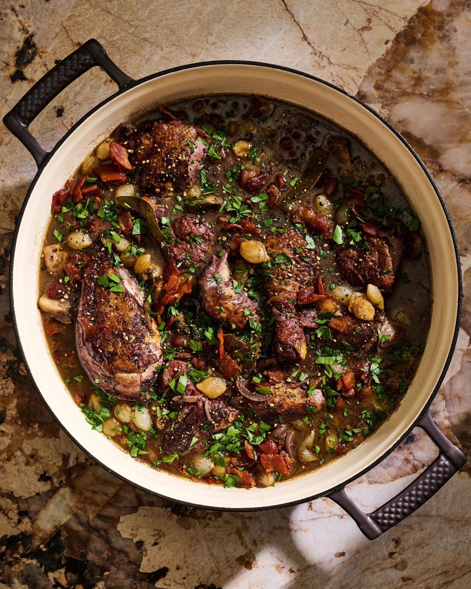
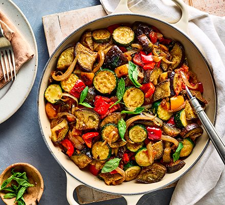

Serving Size:Serves 6
Prep Time:
30 min
Marination Time:
12-24 hrs
Cook Time:
1.5-2 hrs
Total Time:
14-26 hrs
Ingredients:
• 1 whole chicken (about 2 kg/4.4 lbs), cut into 8 pieces
• 750ml red wine (Burgundy/Pinot Noir)
• 2 carrots, chopped
• 2 celery stalks, chopped
• 1 large onion, chopped
• 4 garlic cloves, crushed
• 2 bay leaves
• 4 sprigs fresh thyme
• 200g bacon lardons
• 24 pearl onions
• 250g button mushrooms
• 3 tbsp butter
• 2 tbsp olive oil
• 2 tbsp all-purpose flour
• 2 tbsp brandy (optional)
• Salt and pepper
`,
`
Instructions:
1. Marinate chicken with vegetables, wine, and herbs for 12-24 hrs.
2. Remove chicken, pat dry, reserve marinade.
3. Brown bacon, then chicken in same pot.
4. Sauté onions and mushrooms, set aside.
5. Make roux, add marinade, thicken sauce.
6. Simmer chicken in sauce 1 hr.
7. Add bacon, onions, mushrooms for last 15 min.
8. Serve hot with bread or potatoes.`)">
Coq au Vin
Ingredients (Serves 6-8):\
For the Tomato Sauce Base:
\
• 2 large onions, finely diced
\
• 6 garlic cloves, minced
\
• 2 red bell peppers, diced
\
• 800g (28 oz) canned crushed tomatoes
\
• 2 tablespoons tomato paste
\
• 1/4 cup extra virgin olive oil
\
For the Vegetables:
\
• 2 large eggplants, sliced into 1/4-inch rounds
\
• 4 medium zucchini, sliced into 1/4-inch rounds
\
• 6 ripe Roma tomatoes, sliced into 1/4-inch rounds
\
For Seasoning:
\
• 1/4 cup fresh basil, chopped
\
• 2 tablespoons fresh thyme leaves
\
• 2 teaspoons Herbes de Provence
\
• Salt and freshly ground black pepper
\
• Extra virgin olive oil for drizzling
\
Time Required:
\
• Prep Time: 45 minutes
\
• Cooking Time: 1 hour 15 minutes
\
• Total Time: 2 hours
\
Difficulty Level: Intermediate
\
Equipment Needed:
\
• Large oval or round baking dish
\
• Sharp knife
\
• Mandoline (optional but recommended)
\
• Large sauté pan
\
• Parchment paper',
'
Detailed Instructions:
\
Preparation:
\
1. Preheat oven to 375°F (190°C). Salt eggplant slices and let drain for 30 minutes.
\
2. Pat eggplant dry with paper towels.
\
Making the Sauce Base:
\
3. Heat olive oil in large pan over medium heat. Add onions and cook until soft (5-7 minutes).
\
4. Add garlic, cook for 1 minute until fragrant.
\
5. Add diced peppers, cook for 5 minutes.
\
6. Add crushed tomatoes, tomato paste, half the herbs, salt, and pepper. Simmer 15 minutes.
\
Assembly:
\
7. Spread sauce evenly in baking dish.
\
8. Arrange vegetable slices in alternating pattern, slightly overlapping, in a circular design.
\
9. Drizzle with olive oil, remaining herbs, salt, and pepper.
\
10. Cover with parchment paper cut to fit dish.
\
Baking:
\
11. Bake covered for 45 minutes.
\
12. Remove parchment, bake additional 15-20 minutes until vegetables are tender.
\
13. Let rest for 10 minutes before serving.
\
Tips:
\
• Choose vegetables of similar diameter for even cooking
\
• Can be served hot, room temperature, or cold
\
• Improves in flavor next day
\
• Freezes well for up to 3 months
\
• For best results, use fresh, in-season vegetables')">
Ratatouille